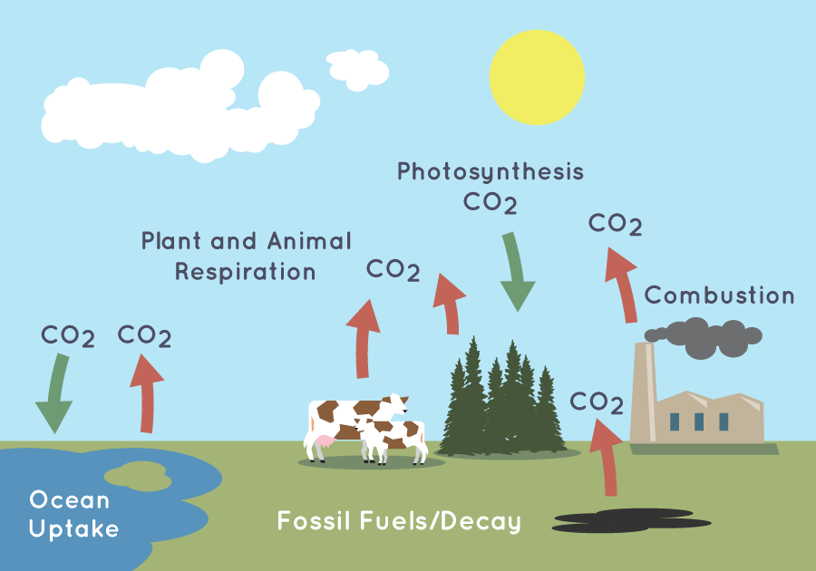

What is the Carbon Cycle?
The carbon cycle is a cycle of carbon (in the form of CO2) being added to or taken from the atmosphere,
balancing it out
The processes are usually done through processes, such as: combustion, AI generatio,n etc.. The cycle is the
balance of CO2 getting removed and added. The problem is the imbalance of carbon in the
atmosphere. Too much or a lack of CO2 will kill off most of the aerobic life on earth.
The problem right now is that we are producing too much CO2. This is through ways such as combustion,
burning, and exhaling. On the contrary, the way that CO2 is used is mainly in photosynthesis for
plants
but due to deforestation, it isn't removing enough carbon from the atmosphere. (kmansfield).
We are the biggest problem when it comes to balancing the atmosphere is us. We create an unbalance of
CO2
in unnatural ways such as combustion, burning (for example, fossil fuels), Generative AI, and many more. We also
lower
CO2 intake by chopping trees and trashing in the ocean.
You can help balance the atmosphere by:
- Carpooling
- Generative AI
- Eating Healthier
- Flying Less (The Global Goals)
Diagram of carbon cycle

(kmansfield)
How does AI change the Carbon Cycle
Now diving specfically in AI a modern cause of carbon cycle disruption. Massive amounts of energy is used for AI
every day.
It's not even limited to electricity LLM's use ~50 million gallons according to Barnett. This is even worse for
LLM's for example chatGPT has over 1 million GPUs (Zewe).
What are some ways to prevent AI? Some ways incude spreading awareness and donating. On a global scale more AI
regulation and laws will help in controlling AI. Regulation can also help with preventing illegal use casses,
enviroment destruction (incuding the imbalance of the carbon cycle).